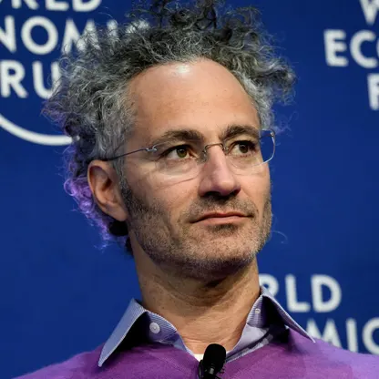

Philosopher turned tech titan anchoring democratic defense and enterprise AI.
Holding a Ph.D. in neoclassical social theory rather than a conventional computer science degree, Dr. Alex Karp breaks Silicon Valley conventions. Since co-founding Palantir Technologies in 2003 alongside Peter Thiel, he has spearheaded critical data intelligence architectures for Western democracies, intelligence agencies, and Fortune 500 enterprises.
Key milestones shaping Karp's unconventional transition from academia to defense tech.
Click on any category button to dynamically filter platform architectures.
Strategic contributions to the software industry and takeaways for aspiring founders.
Karp positioned Palantir as the foundational operating system for Western defense and counter-terrorism operations, demonstrating how high-end software directly reinforces democratic institutional resilience.
Rejecting traditional Silicon Valley commercial norms, Karp led Palantir through a direct public listing (NYSE: PLTR in 2020) and pioneered AI Platform (AIP) deployment across critical supply chains and healthcare systems.
Karp demonstrated that deep training in philosophy, classical theory, and ethics can yield sharp operational foresight—countering tech consensus to build high-barrier, contrarian enterprises.
In an era where tech firms avoided defense and government partnerships, Karp championed technological parity for democratic allies, demonstrating the power of steadfast institutional purpose.
All factual claims, milestones, and venture profiles are cross-referenced with primary sources.